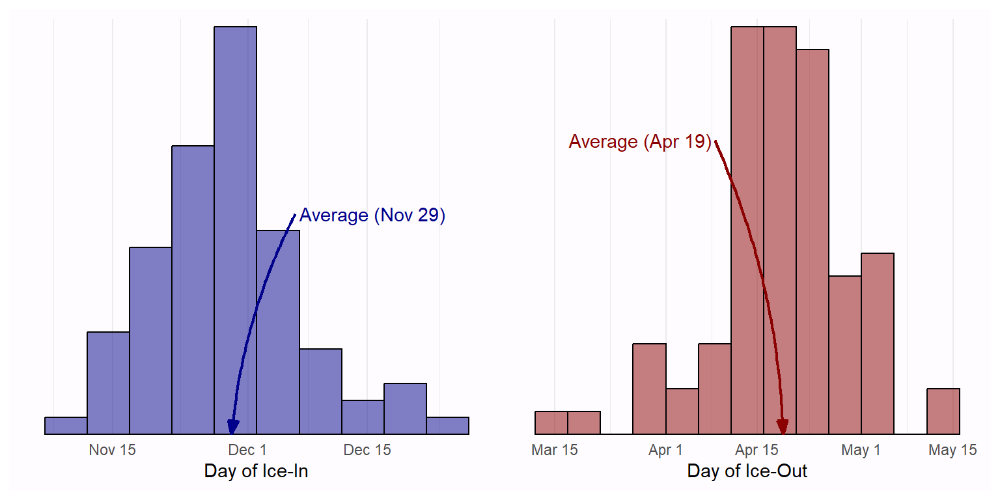
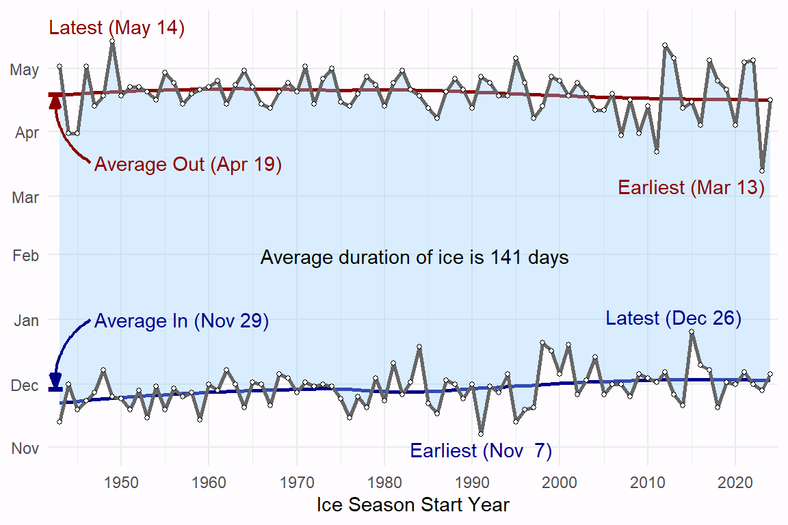

Ice In and Out Dates


Ice Duration
| Season | In | Out | Duration |
|---|---|---|---|
| 2023-2024 | Nov 28 | Mar 12 | 105 |
| 2011-2012 | Dec 2 | Mar 21 | 110 |
| 2015-2016 | Dec 26 | Apr 14 | 110 |
| 1998-1999 | Dec 21 | Apr 13 | 113 |
| 2009-2010 | Dec 6 | Mar 31 | 115 |
| 2016-2017 | Dec 10 | Apr 4 | 115 |
| 2004-2005 | Dec 14 | Apr 11 | 118 |
| 2001-2002 | Dec 20 | Apr 18 | 119 |
| 2007-2008 | Dec 1 | Mar 29 | 119 |
| 1944-1945 | Dec 1 | Mar 31 | 120 |
| 1984-1985 | Dec 19 | Apr 18 | 120 |
Table 1: Winter seasons with the 10 shortest ice durations, 1943-2023.
| Season | In | Out | Duration |
|---|---|---|---|
| 1995-1996 | Nov 13 | May 5 | 174 |
| 1991-1992 | Nov 7 | Apr 26 | 171 |
| 1943-1944 | Nov 13 | May 1 | 170 |
| 1949-1950 | Nov 25 | May 14 | 170 |
| 1955-1956 | Nov 19 | Apr 28 | 161 |
| 1964-1965 | Nov 20 | Apr 30 | 161 |
| 2013-2014 | Nov 26 | May 6 | 161 |
| 1946-1947 | Nov 23 | May 2 | 160 |
| 1959-1960 | Nov 14 | Apr 20 | 158 |
| 1978-1979 | Nov 20 | Apr 27 | 158 |
Table 2: Winter seasons with the 10 longest ice durations, 1943-2023.